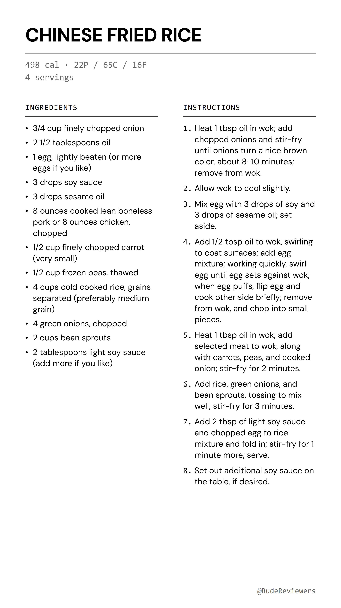

the fried rice that actually tastes like restaurant takeout INGREDIENTS: - 3/4 cup finely chopped onion - 2 1/2 tablespoons oil - 1 egg, lightly beaten (or more eggs if you like) - 3 drops soy sauce - 3 drops sesame oil - 8 ounces cooked lean boneless pork or 8 ounces chicken, chopped - 1/2 cup finely chopped carrot (very small) - 1/2 cup frozen peas, thawed - 4 cups cold cooked rice, grains separated (preferably medium grain) - 4 green onions, chopped - 2 cups bean sprouts - 2 tablespoons light soy sauce (add more if you like) INSTRUCTIONS: 1. Heat 1 tbsp oil in wok; add chopped onions and stir-fry until onions turn a nice brown color, about 8-10 minutes; remove from wok. 2. Allow wok to cool slightly. 3. Mix egg with 3 drops of soy and 3 drops of sesame oil; set aside. 4. Add 1/2 tbsp oil to wok, swirling to coat surfaces; add egg mixture; working quickly, swirl egg until egg sets against wok; when egg puffs, flip egg and cook other side briefly; remove from wok, and chop into small pieces. 5. Heat 1 tbsp oil in wok; add selected meat to wok, along with carrots, peas, and cooked onion; stir-fry for 2 minutes. 6. Add rice, green onions, and bean sprouts, tossing to mix well; stir-fry for 3 minutes. 7. Add 2 tbsp of light soy sauce and chopped egg to rice mixture and fold in; stir-fry for 1 minute more; serve. 8. Set out additional soy sauce on the table, if desired. Recipe by PalatablePastime via food.com #friedrice #recipe #easyrecipes #weeknight #highprotein #mealprep #foodtok
Long-press each photo → Save to Photos. Then open TikTok → Photo post.
